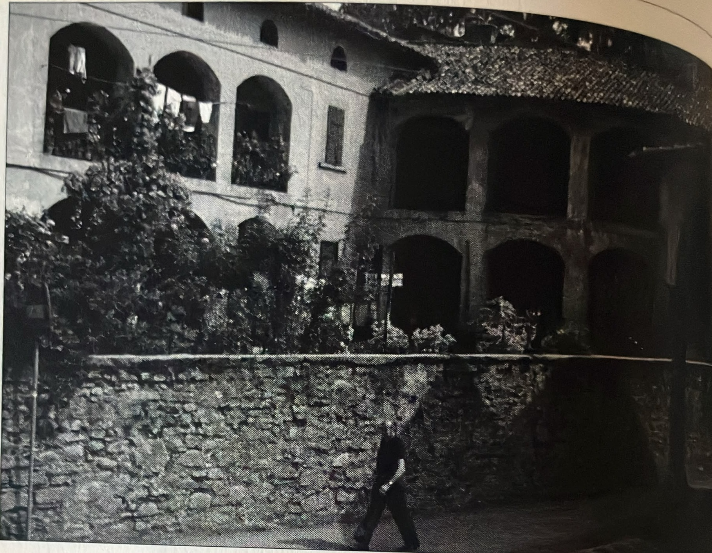
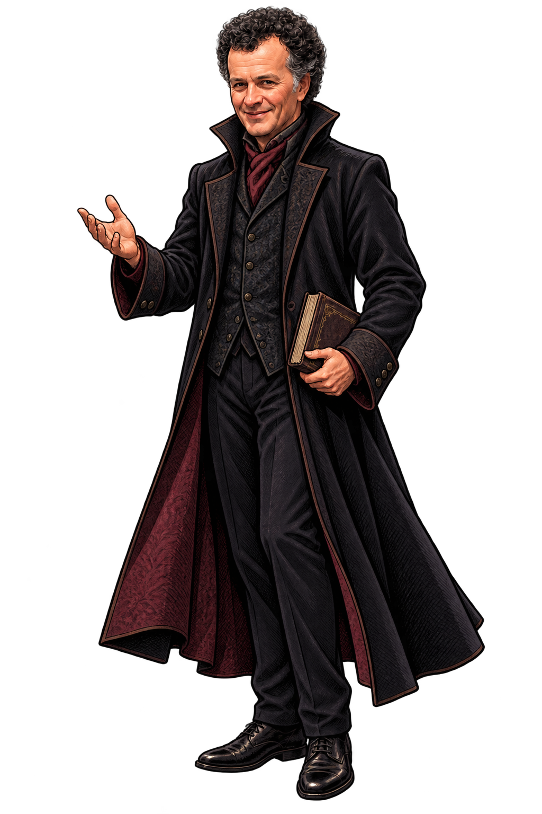

OLEGGIO CASTELLO · TAPPA DEMO
Il municipio,
prima e oggi
Fai scorrere il passato sopra la facciata attuale. Porta Guido nella sala: inquadra il cartello con la fotocamera e guardalo seguire la prospettiva mentre ti muovi.
Guido nella sala, con un riferimento riconoscibile. Stampa il cartello e mettilo su un supporto nella sala, oppure mostra la foto su un secondo schermo. Premi «Guido AR» e inquadra la foto: Guido segue la posizione, la scala e la prospettiva del cartello. Mantieni il riferimento visibile: quando esce dal campo Guido scompare e torna quando lo ritrovi. La prova libera resta un effetto dimostrativo, meno stabile. Per la facciata puoi usare il confronto del 1973.


1973 · DIDASCALIAOGGIAnteprima sovrapposta · regola per trovare il punto di vista
Anteprima pronta. L’allineamento finale si regola dal punto di ripresa.
Apri sul telefono con HTTPS e autorizza la fotocamera. Per «Guido AR» serve il cartello con la foto attuale, ben illuminato e senza riflessi. Per la prova libera puoi usare una qualsiasi ripresa; l’aggancio non equivale a un riferimento spaziale permanente.